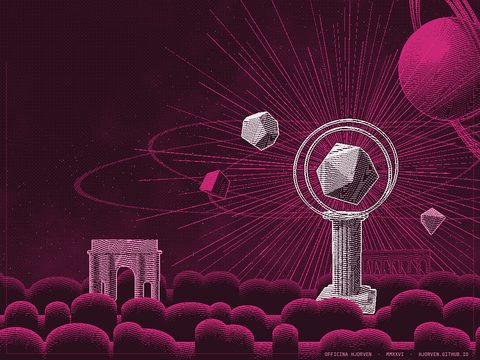
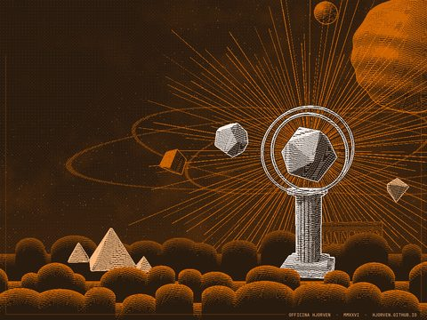
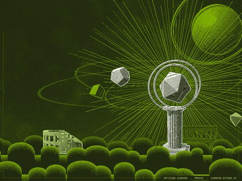
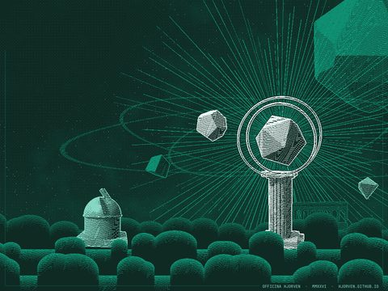
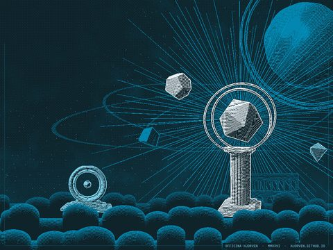

Wallpapers for iPad
Twelve 1-bit engravings for the Safari start page, each with its own planet and building. 2160 × 1620 landscape and 1620 × 2160 portrait, made for the iPad (9th generation).
















- Tap Landscape or Portrait, then hold the image and choose Save to Photos.
- In Safari, open a new tab, tap Edit at the bottom of the start page and turn on Background Image.
- Tap + and pick the wallpaper.